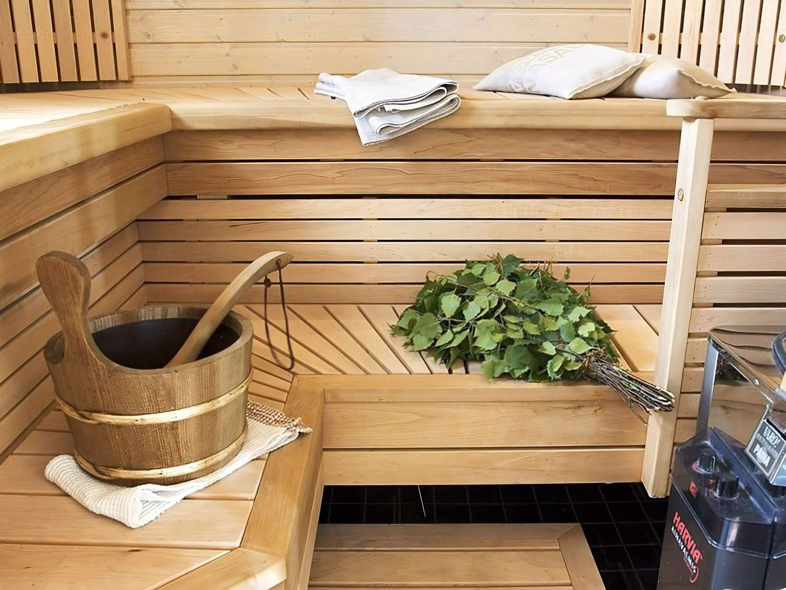
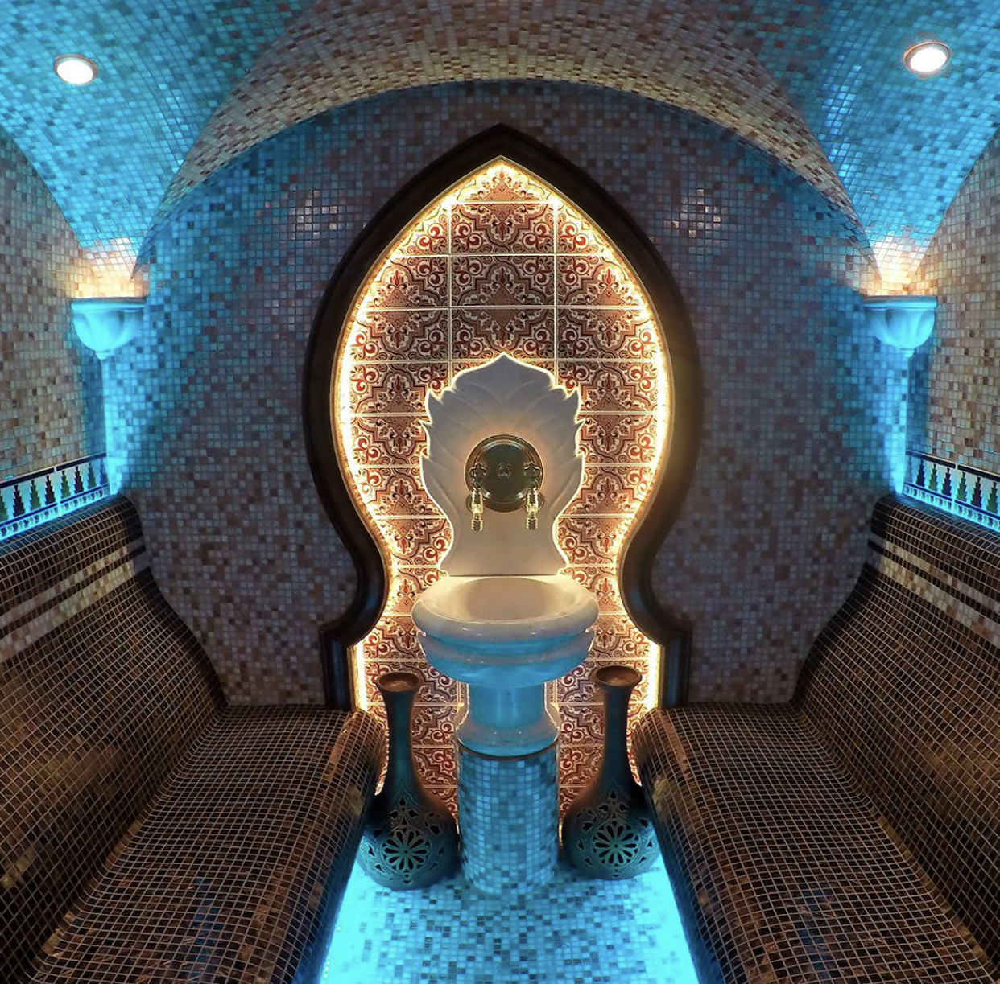
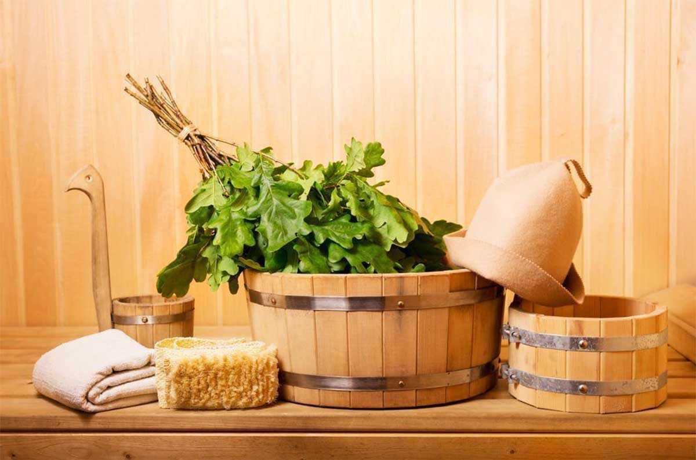
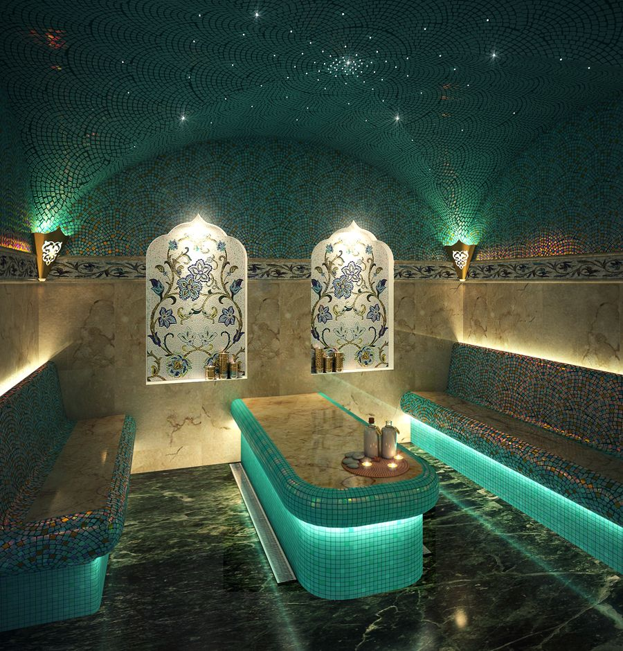

Немного о нас
Доброго времени суток, уважаемые гости и любители красоты!
Камилла, рада приветствовать вас своём моем сайте.
У нас имеются много эксклюзивных программ начиная от причесок заканчиваю расслабляющими спа процедурами
Баня — это любимый способ собраться, отдохнуть с пользой
и удовольствием вместе с близкими. В баню приходят, чтобы очистить свой организм, укрепить иммунитет, расслабиться и получить настоящее удовольствие от парения.
Горячий и влажный пар хаммама расслабляет тело, раскрывает поры и подготавливает к дальнейшим процедурам. Прогревание в хаммаме избавляет от токсинов, расслабляет тело. Мгновенно наступают ощущения теплоты и блаженного состояния..


у нас самые опытные массажисты Челнов
.

|
Меню

Сауна

Хамам
Массаж
|